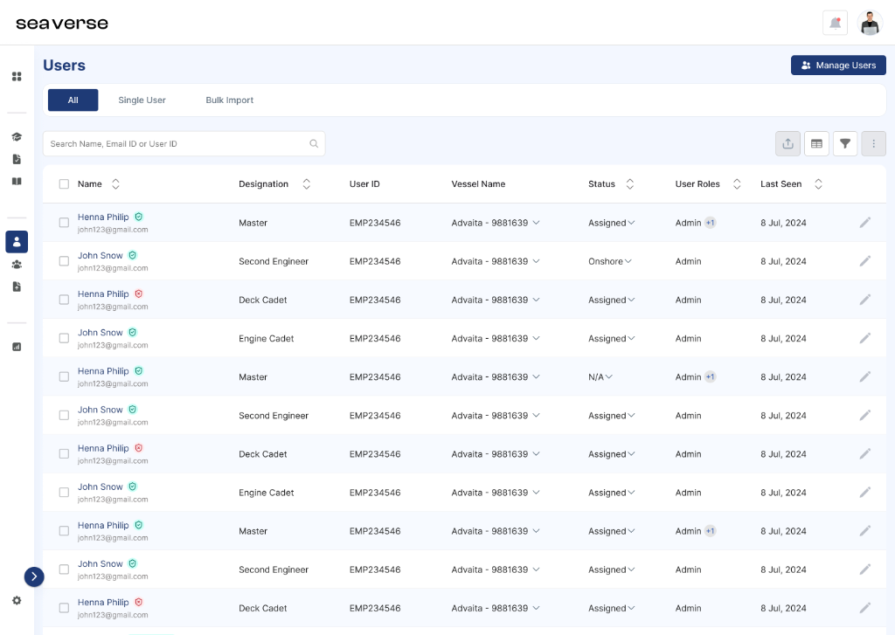
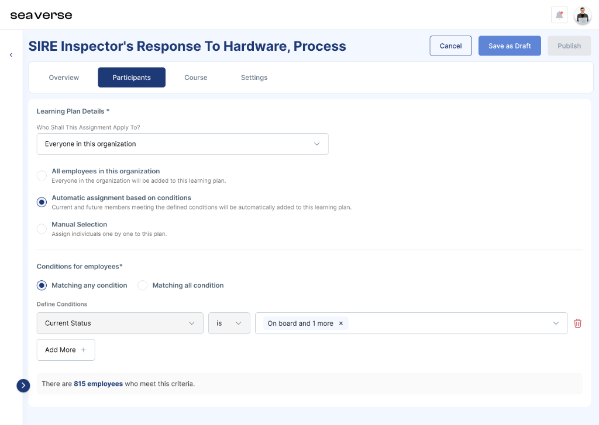
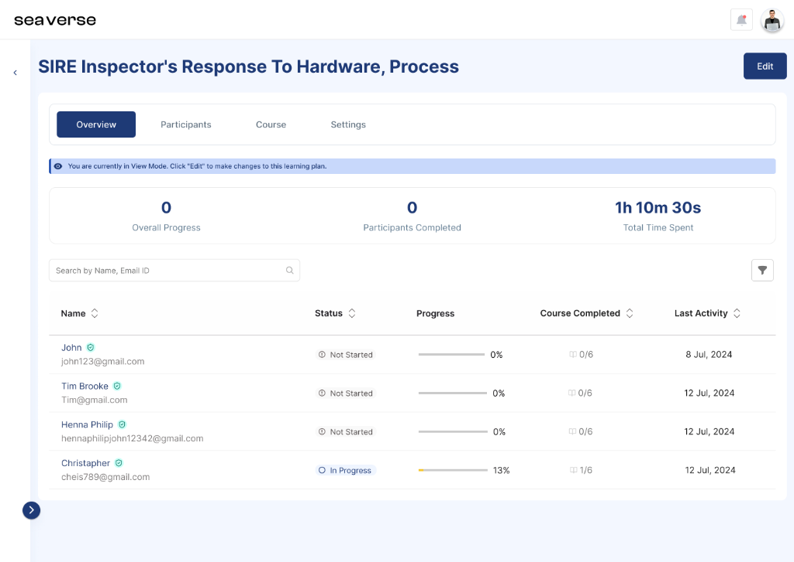
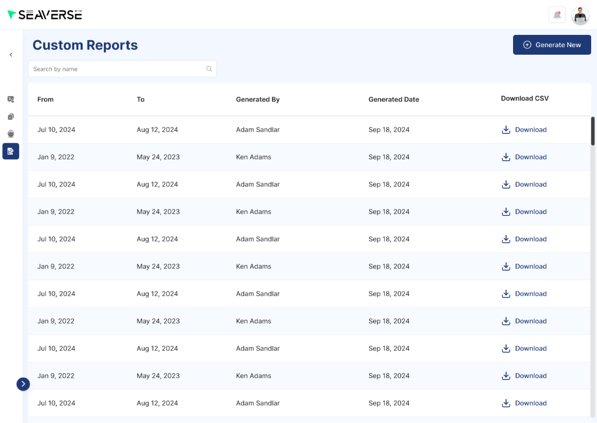
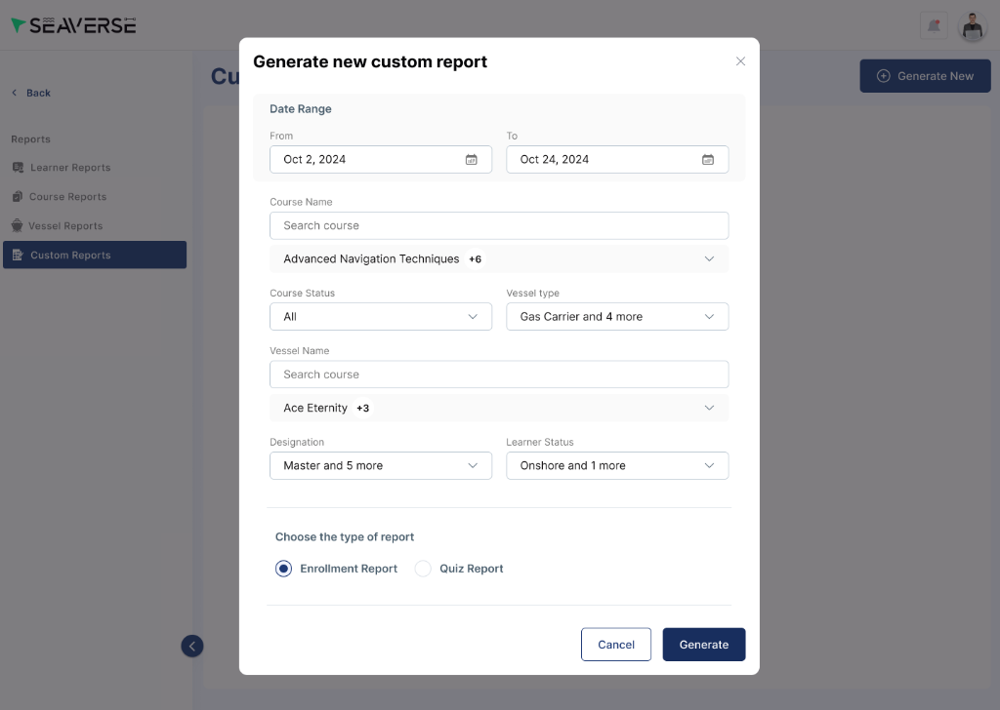
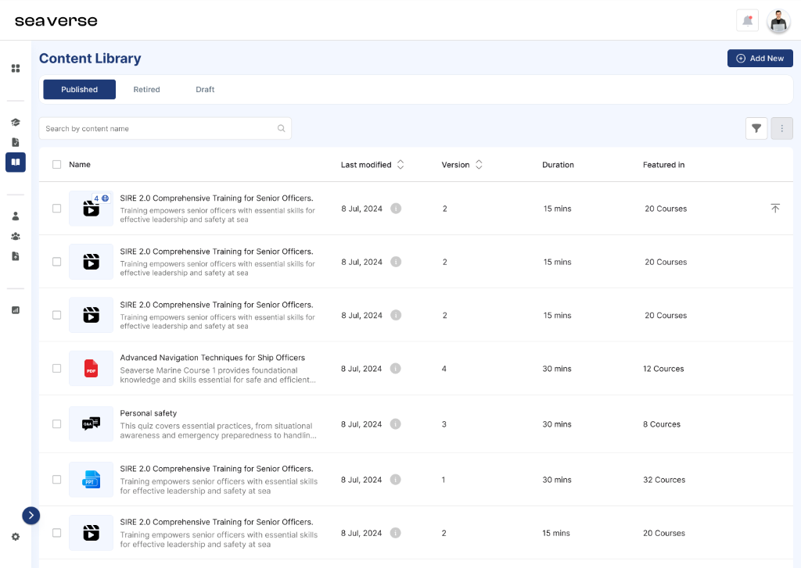
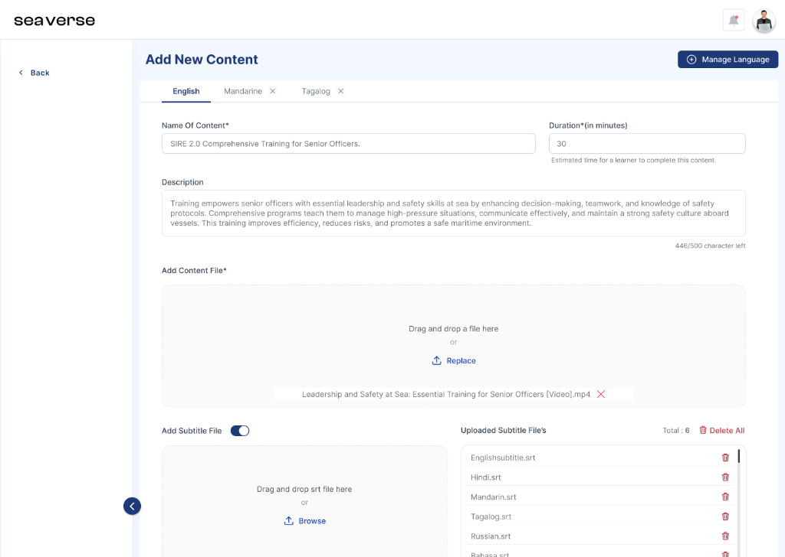
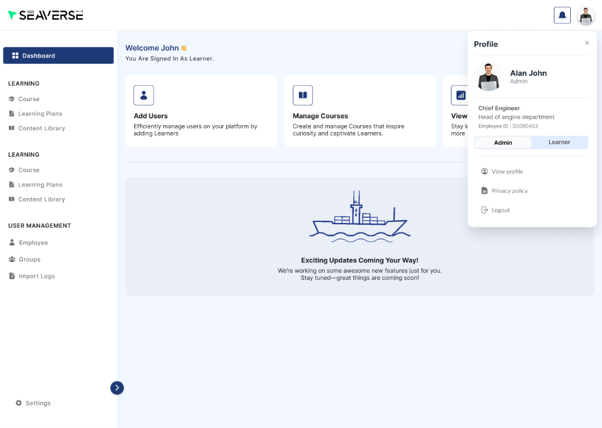

Designing a dual-platform maritime LMS for global fleet operations & crew compliance


Context
Maritime shipping operations demand strict, continuous regulatory compliance (IMO, STCW, and SIRE 2.0 safety vetting). Seafaring crews—comprising Masters, Chief Engineers, Navigation Officers, and Cadets from across the globe—operate on extended sea voyages under low-bandwidth satellite connectivity, while shore-based technical superintendents and fleet managers oversee compliance from headquarters.
Seaverse was engineered as an enterprise-grade maritime learning and crew compliance management ecosystem. The platform provides centralized curriculum authoring, dynamic learning plan rule engines, multi-lingual subtitle localization, fleet-wide crew provisioning, and audit-ready SIRE 2.0 vetting reporting.
The Challenge
Traditional maritime training relied on fragmented physical binders, disparate USB drives, and rigid SCORM packages that could not adapt when safety regulations or vessel equipment changed. Fleet operators needed a unified system capable of managing multi-lingual instructional media, tracking compliance across hundreds of ships, and providing seamless role duality for senior shipboard officers who manage training while completing their own certifications.
Maritime training isn't just standard corporate HR learning—it's a critical safety barrier. If a navigation certification expires at sea, entire vessels can be detained at port.
Principles that guided decisions
Separate raw media assets (videos, quizzes, documents) from structured courses so safety updates propagate across the entire fleet instantly.
Treat subtitles and language tracks as first-class modular layers, enabling global multi-national crews to learn in their native languages without duplicating curriculum trees.
Anchor user profiles directly to vessel assignments (e.g. Advaita), maritime ranks, and shore status, with instant duality switching between Admin oversight and Learner progression.
Structure tables, status indicators, and certification badges for rapid scanning during port inspections and SIRE 2.0 vetting reviews.
The Enterprise Admin Management Panel
The administrative command center provides fleet superintendents and training managers complete control over learning plans, compliance reporting, content localization, and crew provisioning.
1. Automated Learning Plans & Dynamic Assignment Rule Engine
Maritime regulations require specific training modules depending on a seafarer's rank, vessel class, and deployment state (onboard vs. onshore). I designed an automated Learning Plan engine that replaces manual enrollment spreadsheets with a dynamic rule builder. Administrators define logic triggers (e.g., "Assign SIRE 2.0 Hardware Inspection course when Current Status is On-Board"), which automatically enrolls eligible crew members and synchronizes progress in real time.



2. Custom Compliance Reporting & Audit Trail Export
Port State Control officers and maritime vetting inspectors require instant, verifiable proof of crew training compliance. I designed a multifaceted Custom Report generator allowing superintendents to slice training data across custom date ranges, specific vessel types (Gas Carriers, Tankers, Bulk Carriers), vessel names, maritime designations, and report categories (Enrollment Reports vs. Quiz Scorecards) with direct CSV export capabilities.


3. Multi-Format Content Library & Multi-Lingual Subtitle Management
Maritime crews represent diverse linguistic backgrounds (Tagalog, Hindi, Mandarin, Russian, Bahasa, English). Rather than duplicating full courses per language, the platform decouples video assets from their subtitle tracks. Administrators upload high-definition instructional videos once and manage synchronized SRT subtitle files across multiple languages with granular upload and removal controls.


4. Vessel-Aware Crew Directory & Instant Role Duality Switcher
Maritime crew management requires tracking officers across active vessel assignments and onshore leaves. I designed a dense, scannable data grid with rapid inline filtering by maritime designation (Master, Second Engineer, Deck Cadet, Engine Cadet), vessel assignment (e.g. Advaita - 9881639), and operational status (Assigned vs. Onshore). Additionally, senior officers can toggle between Admin oversight and Learner mode via the global profile flyout.

Key Outcomes & Impact
Evaluated based on customer deployment feedback and fleet administration operational time studies.